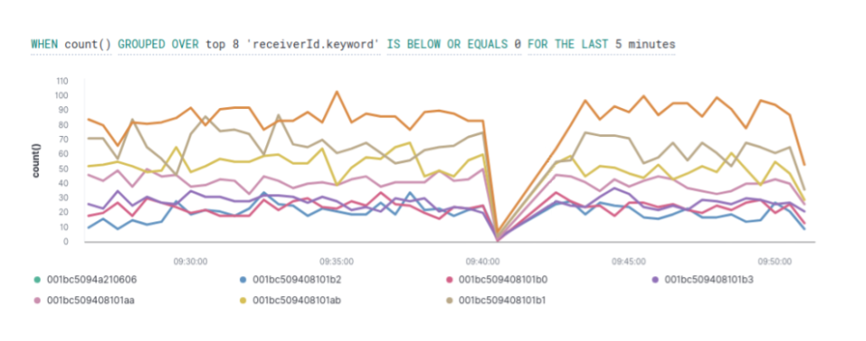
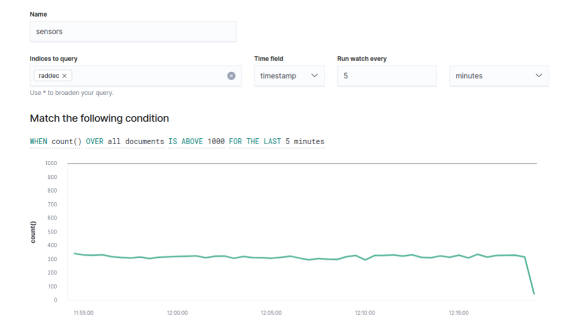
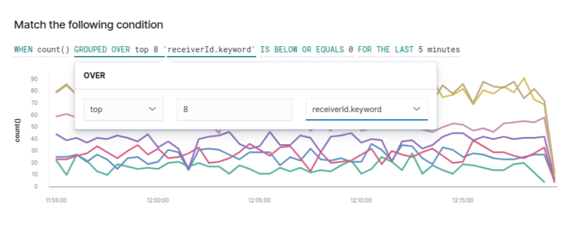
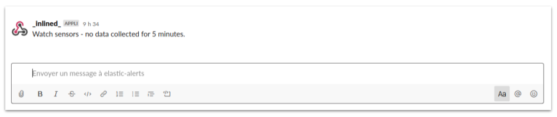

Create alerts and notifications in Kibana.
Our step-by-step guide to create alerts that identify specific changes in data and notify you.
The TL;DR (Too Long; Didn't Read)
Learn how we at reelyActive use watcher to query something in Elasticsearch and get notified.
- What will this accomplish?
- An alert by email, PagerDuty, Slack or HipChat about the data that are interesting to you.
- Is there an easier way?
- Manual counts and analysis of data behavior using pen and paper?
- So why would I read this?
- To learn both how and why to alert specific behavior in Kibana.
Creating alerts Step 1 of 3
Go to watcher and create an alert.
- Why an alert?
- Alerting features keep you in the know.
- Why Kibana?
- Kibana makes it easy to visualise data from an Elasticsearch database, where the source data is stored.
Open Kibana and then:
- Click the gear icon from the left toolbar: Management
- From the Elasticsearch list click on Watcher.

Building a threshold alert Step 2 of 3
Define a meaningful alert on a specified condition.
- Why a threshold alert?
- To periodically check when data goes above or below a certain threshold within a given time interval.
- What's for?
- Create an alert when one of the sensors no longer collects data for 5 minutes.
From Watcher page:
- Click the Create button
- Choose Create threshold alert
From Create threshold alert page:
- Enter the Name of the alert
- Select raddec in Indices to query field
- Select timestamp in the Time field area
- Define the time threshold in the Run watch every fields
You should be able to visualize the filled fields as below:
You can adjust the specified condition by clicking the elements as below:
Sending an alert Step 3 of 3
Send the alert with Slack and receive a notification whenever the condition occurs.
- Why Slack?
- Slack is an instant messaging platform that uses channels
- What's a channel?
- A channel is a single place for a team to share messages
Open Kibana and then:
- Click the Add Actions button
- Choose Slack
From Slack tab:
- Add a recipient if required
- Enter an alert message that will be sent to the Slack channel.
- Once done, you can try sending a sample message and confirming that you received it on Slack.
- Click the Create alert button
You should be able to see the message in the Slack channel configured:

Winner of a 2020 Elastic Search Award!
For our innovation of making physical spaces searchable like the web.
Where to next?
Create other visualizations, or continue exploring our open architecture and all its applications.
-

Integrate Slack with Elasticsearch and Kibana
Our step-by-step guide to setting up Slack integration to receive instant notifications. -

Integrate e-mail with Elasticsearch and Kibana
Our step-by-step guide to setting up e-mail integration to receive instant notifications. -

reelyActive Kibana integration overview
Find links to all our Kibana tutorials. -

diyActive Home
The home for reelyActive developers.